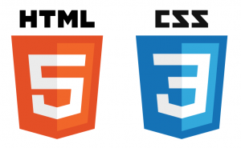
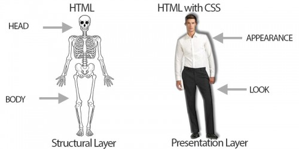

CSS Nedir?
CSS bir kısaltmadır. Cascading Style Sheets kelimesinin baş harflerinden oluşur. Dilimizdeki
anlamı: Basamaklı Stil Sayfası.
Stiller, bir HTML elementinin nasıl görüneceğini belirleme olanağı sağlar.
HTML dosyamızın daha anlaşılır olmasını sağlar. Stillerimiz tek bir dosyada toplanır ve kolaylıkla okunur - değiştirilir.
CSS Ne İşe Yarar?
Tanımında da belirttiğimiz gibi, CSS, web sayfamızdaki öğelerin stilini/görünümünü değiştirmemizi sağlar.
Butonunuza gölge mi eklemek istiyorsunuz? Biri sola diğeri sağa dayalı 2 formu aynı konumda mı göstermek istiyorunuz?
Ya da sayfanızı scroll etseniz bile yukarıda sabit kalan bir header’a mı ihtiyacınız var? O halde CSS yardımınıza koşacaktır.
Web sayfasının görünümüyle alakalı nice senaryoda CSS kullanmanıza gerek olacaktır.
Görünümü Değiştirmek İçin İlla CSS Mi Kullanmalıyım?
İstediğim Stili Html İle Sağlayamaz Mıyım?
CSS ile düzenleyebildiğimiz bazı görünüm düzenlemelerini CSS kullanmadan yalnızca HTML kullanarak da sağlayabiliriz.
Örneğin, yazı font büyüklüğünü değiştirme, yazı rengini değiştirme, resim boyutunu düzenleyebilme gibi…
Ancak yapılmak istenen işler karmaşıklaştıkça (buton gölgelendirme, resim saydamlığını düzenleme,link üzerine geldiğimizde
rengin değişmesi vb.) CSS kullanmaya yöneliyoruz.
